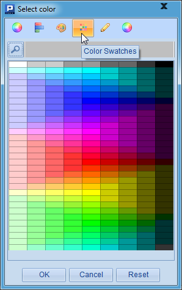
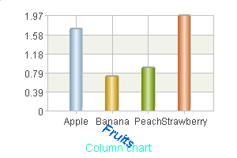
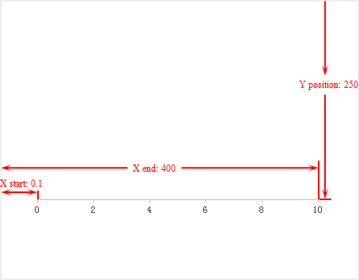
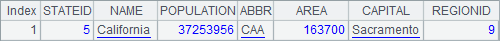
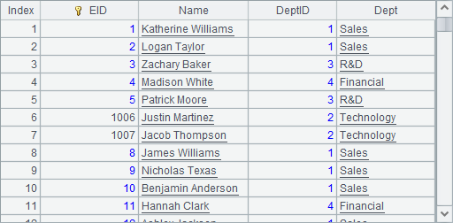

A polar or a radial axis in a polar coordinate system can be a numeric axis, an enumeration axis or a date axis too. But the properties of the logical axes are different from those of the logical axes in a Cartesian coordinate system.
Below is a plotting algorithm of a vault scores pie chart:
|
|
A |
|
1 |
=canvas() |
|
2 |
=demo.query("select * from GYMSCORE where EVENT = 'Vault'") |
|
3 |
=A1.plot("BackGround") |
|
4 |
=A1.plot("EnumAxis","name":"x","location":3,"polarX":0.5,"allowLabels":false) |
|
5 |
=A1.plot("NumericAxis","name":"y","location":4,"allowLabels":false) |
|
6 |
=A1.plot("Sector","text":A2.(NAME),"axis1":"x","data1":A2.(NAME), "axis2":"y","data2":A2.(SCORE)) |
|
7 |
=A1.draw@p(450,350) |
A2 retrieves data for plotting the chart from the database:

A4 sets polar axis x as an enumeration axis, specifying that labels won¡¯t be displayed and defining its physical abscissa as 0.5 to plot the pole in the middle of the canvas. A5 plots radial axis y as a numeric axis, displaying no labels and using default property values of the radial axis.
 
A6 plots the pie chart according to logical coordinates composed of athlete names and scores, labelling athlete name to each slice. A7¡¯s plotting result is as follows:

As can be seen from the polar axis settings, its length, i.e. the radius of the polar coordinate system, is set in proportion to the canvas width.
Modify the start angle and end angle properteis of the polar axis by changing A5¡¯s code to =A1.plot("NumericAxis","name":"y","location":4,"startAngle":30,"endAngle":300,"allowLabels":false):

With this re-setting, the scope of the coordinate plane has changed. Plotting result is as follows:
